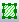

Einführung
Intro-Image-Processing
Bildfenster
Seit Version 2021b gibt es in Origin ein neues Bildfenster zum Laden und Speichern von Bildern. Es setzt OpenCV für die Verarbeitungs- und Analyseroutinen ein. Das neue Bildfenster ist ein Fenster mit einem einzelnen Layer, wie unten zu sehen. Es verfügt über eine Informationsleiste oben (falls nicht, können Sie im Menü Ansicht: Informationen zeigen auswählen, um sie dazuzuschalten). Im Fall eines Videos oder Bildes mit mehreren Frames befindet sich eine Navigationsleiste unten (oder Ansicht: Navigation zeigen, um sie einzuschalten). Es ist verantwortlich für fast alle Operationen der Bildverarbeitung.
| Bild mit einzelnem Frame |
Bild mit mehreren Frames oder Video |
/Importing_Images_introduction_02.png) |
|
/Tip_icon.png) |
- Vor Origin 2021b wurden Bilder im Matrixfenster und die Verarbeitungshilfsmittel wurden von LeadTools unterstützt. Das neue Bildfenster wird dagegen von OpenCV für Verarbeitungs- und Analyseroutinen unterstützt.
- Das Matrixfenster ist ein Fenster mit mehreren Layern, die viele Blätter enthalten. Ein Bildfenster hat jedoch nur ein Blatt.
- Das Matrixfenster ist verantwortlich für fast alle Standardhilfsmittel der Bildverarbeitung. Wenn ein Prozess oder eine Analyse Datenergebnisse ausgibt wie die 2D-FFT, wird das Matrixfenster verwendet. Das Bildfenster wird außerdem in den meisten Apps zur Bild-/Videoverarbeitung verwendet.
- Sie können ein Bildfenster immer in eine Matrix umwandeln und diese Umwandlung umkehren. Siehe unten.
|
Bilder und Videos importieren
Weitere Einzelheiten finden Sie auf dieser Dokumentseite.
- Bearbeiten: Ausschneiden: Das aktive Bildfenster wird gelöscht.
- Bearbeiten: Löschen: Wenn ein ROI-Feld ausgewählt ist, löscht dieses Menü das ROI-Feld; wenn das Bildfenster ausgewählt ist, löscht dieses Menü das Fenster.
- Bearbeiten: Kopieren: Falls ein ROI-Feld ausgewählt ist, kopiert dieses Menü das ROI-Feld. Falls das Bildfenster ausgewählt ist, kopiert dieses Menü das Bild. Sie können es dann als Objekt oder Bildfenster in ein Diagrammfenster einfügen.
- Bearbeiten: Einfügen: Das kopierte ROI-Feld oder Bild wird eingefügt.
- Ansicht: Information: Die Informationsleiste wird gezeigt/verborgen.
- Ansicht: Navigation: Die Navigationsleiste wird gezeigt/verborgen.
Bilder und Videos exportieren
Weitere Einzelheiten finden Sie auf dieser Seite.
Einfache Operationen im Bildfenster
Neben Hilfsmitteln im Hauptmenü Bild stehen Symbolleistenschaltflächen und Kontextmenüs für den schnellen Zugriff auf einfache Bearbeitungsoptionen zur Verfügung.
Mini-Toolbar
- Durch einen Klick auf eine beliebige Stelle im Bildlayer wird eine Minisymbolleiste angezeigt.
- Bild mit einzelnem Frame:
- Video:
- Gestapeltes Bild mit mehreren Frames:
Paletten auf graustufige Bilder anwenden
Farbpaletten können auf graustufige Bilder im Bildfenster angewendet werden.
- Klicken Sie auf die Schaltfläche Grau
/Popup_Gray.png) der Minisymbolleiste, falls notwendig, um ein Bild in Graustufen umzuwandeln.
der Minisymbolleiste, falls notwendig, um ein Bild in Graustufen umzuwandeln.
- Wenden Sie eine Palette auf das graustufige Bild an, indem Sie auf die Schaltfläche Palette
/Button_Palette.png) auf der Symbolleiste Stil klicken.
auf der Symbolleiste Stil klicken.
- Klicken Sie auf die Minisymbolleiste Palette umkehren
/Popup_Revise_Palette.png) , um die Anwendung der gewählten Palette umzukehren.
, um die Anwendung der gewählten Palette umzukehren.
| Klicken Sie in der Liste Palette auf der Symbolleiste Stil auf Mehr Paletten, um den Dialog Farbmanager zu öffnen und mehr Paletten hinzuzufügen. |
Kontextmenü
| ROI-Feld hinzufügen |
Unten können Sie nachlesen, was Sie mit einem ROI-Feld tun können. |
| ROI importieren ... |
Erstellen Sie ein ROI-Feld, indem Sie die Einzelheiten eines zuvor gespeicherten ROI-Felds anwenden. Siehe Abschnitt "Region of Interest" (ROI) dazu, wie ROI-Einstellungen gespeichert werden. |
| ROI aus XY erstellen ... |
Erstellen Sie ein ROI-Feld mit beliebiger Form aus einem Satz von XY-Koordinaten (Grenzen) und Indexdaten. Lesen Sie im Abschnitt "Region of Interest" ROI weitere Informationen. |
Tatsächliche Größe anzeigen/
An Fenster anpassen |
- Zeigen Sie das Bild im Pixelmodus 1:1 und in der Mitte des Fensters an ODER
- passen Sie das Bild immer an die Fenstergröße an.
|
| Verknüpfte Datei |
Aktivieren Sie dieses Kontrollkästchen, um das Bild mit der Quelldatei zu verknüpfen. Den Unterschied zwischen verknüpfter und nicht verknüpfter Datei können Sie hier nachlesen. Hinweis: Die Statusleiste kennzeichnet, ob das Bild verknüpft ist oder nicht.
|
| Pfad der Quelldatei |
Öffnen Sie einen Dialog, um die Quelle der Bilddatei zu ändern. Einzelheiten zum Speichern und Ändern des Bildpfads finden Sie hier. |
Hintergrundfarbe ändern
- Verwenden Sie die Schaltfläche Füllfarbe
/Button_Fill_Color.png) auf der Symbolleiste, um die Hintergrundfarbe des Bilds zu ändern.
auf der Symbolleiste, um die Hintergrundfarbe des Bilds zu ändern.
- Verwenden Sie das Labtalk-Skript page.basecolor=, um die Hintergrundfarbe des Bildes zu ändern. Verweisen Sie auf das Page object.
page.basecolor= 3; // Change image background color to green.
Grafische Datenauswahl (ROI-Feld)
Um ein ROI-Feld hinzuzufügen:
- Klicken Sie auf die Schaltfläche ROI hinzufügen
/Add_ROI_Button.png) auf der Minisymbolleiste (die Form des ROI-Felds ist die <Zuletzt verwendete>).
auf der Minisymbolleiste (die Form des ROI-Felds ist die <Zuletzt verwendete>).
- Oder
- Klicken Sie auf das Dreieck ▼ neben der Schaltfläche Rechteck einfügen  auf der Symbolleiste Hilfsmittel und wählen Sie eine der Formen in der Unterliste (Rechteck, Kreis, Polygon, Bereich). Ziehen Sie einen Bereich auf dem Bild auf.
- Oder
- Klicken Sie mit der rechten Maustaste in das Bildfenster und wählen Sie im Kontextmenü ROI hinzufügen (die Form des ROI-Felds ist die <Zuletzt verwendete>).
Um mehrere ROI-Felder zu einem einzelnen Bildfenster hinzuzufügen:
- Nachdem Sie ein ROI-Feld zum Bild hinzu gefügt haben,
- klicken Sie in der Minisymbolleiste auf die Schaltfläche ROI hinzufügen oder
- klicken Sie mit der rechten Maustaste und wählen Sie ROI hinzufügen im Kontextmenü,
- um ein anderes ROI-Feld hinzuzufügen.
- Oder
- Nachdem Sie ein ROI-Feld zum Bild hinzugefügt haben, klicken Sie doppelt auf das Feld, um den Dialog ROI-Position zu öffnen. Geben Sie ihm einen neuen Namen wie "ROI1".
- Fügen Sie ein neues ROI-Feld mit einer der drei Möglichkeiten im obigen Abschnitt hinzu.
| Wenn es hinzugefügt ist, können Sie alle ROI-Felder in der Objektverwaltung anzeigen und einfache Operationen durchführen. |
- Klicken Sie doppelt auf das ROI-Feld, um:
- den ROI-Namen zu ändern.
- das ROI-Feld neu zu positionieren, indem Sie die XY-Koordinaten der Ankerpunkte oben links und unten rechts festlegen.
- Klicken Sie mit der rechten Maustaste auf das ROI-Feld, um
/Image_window_ROI_context_menu.png)
- Zuschneiden: Diese Option ist verfügbar, wenn das Bild über ein Diagramm geöffnet wurde (z. B. durch Doppelklick auf das Diagrammbild). Die Option schneidet das Diagrammbild auf die Größe des ROI-Felds zu. Die ursprüngliche Größe des Diagrammbildes wird auf die Größe des zugeschnittenen Bereiches reduziert. Um das vollständige Bild im Diagrammfenster wiederherzustellen, klicken Sie mit der rechten Maustaste außerhalb des ROI-Felds und wählen Sie Zuschneiden entfernen.
- Ausschneiden: Das Bild im Bildfenster und das Diagrammbild (falls vorhanden) werden gemäß dem ROI-Feld ausgeschnitten. Die Größe des Diagrammbilds und die Position werden beibehalten.
- Kopieren: Das ROI-Feld als ein Bild kopieren. Sie können es dann in andere Fenster innerhalb von Origin einfügen, z. B. ein Diagramm- und Arbeitsblattfenster, oder eine andere Anwendung. Bei Bildern mit mehreren Frames wird nur der aktive Rahmen kopiert.
- Skalierung auf Diagramm anwenden: Verfügbar, wenn das Bild mit Bild aus Bildfenster in ein Diagramm eingefügt wird. Die Option schneidet das Diagrammbild auf die Größe des ROI-Felds im Bildfenster zu.
- Positionen kopieren: Die Koordinaten des ROI-Felds von 4 Vertices werden kopiert. Sie können wählen, sie als einfache Zahlen einzufügen oder das Position in ein anderes ROI-Feld einzufügen. Für die letztere Option können Sie wählen, nur die Breite/Höhe oder die horizontale/vertikale Position des ROI-Felds einzufügen.
- ROI exportieren: Details (z. B. ROI-Name, Position der Vertizes etc.) werden in einer .ROI-Datei für später gespeichert.
- ROI importieren: Details eines zuvor gespeicherten ROI-Felds werden auf das ausgewählte ROI-Feld angewendet.
- Neu aus XY erstellen: Erstellen Sie ein neues ROI-Feld mit beliebiger Form aus einem Satz von XY-Koordinaten (Grenzen) und Indexdaten. Siehe auch ROI aus XY in NetCDF-Daten erstellen.
- Verknüpftes Bild erstellen: Das ROI-Feld wird in einem neuen Bildfenster ausgegeben. Wenn Sie die ROI verschieben oder die Boxgröße oder -form der ROI anpassen, wird das neue Fenster automatisch entsprechend aktualisiert.
- Verknüpfte Matrix erstellen: Die Daten im ROI-Feld werden in einem neuen Matrixfenster ausgegeben. Die Matrix wird gemäß dem ROI des Bildfensters aktualisiert.
- Intensitätsprofil: Es wird ein Intensitätsprofil für das ROI-Feld durchgeführt und der deskriptive Statistikwert in ein Arbeitsblatt ausgegeben. Einzelheiten lesen Sie bitte im Abschnitt unten.
| Der Grad an Bildverdunkelung außerhalb des Bildfenster-ROIs wird durch die Systemvariable @IMGDI gesteuert. Das Festlegen von @IMGDI = 1000 veranlasst, dass die Fläche außerhalb schwarz angezeigt wird; @IMGDI = 0 schaltet die Verdunkelung aus. Eine Anleitung, wie Sie den Wert einer Systemvariablen ändern, finden Sie in dieser FAQ. |
Intensitätsprofil auf ROI
Klicken Sie mit der rechten Maustaste auf das ROI-Feld und wählen Sie Intensitätsprofil im Kontextmenü.
Der Dialog cvroiprofile wird geöffnet.
- Sie können wählen, ob Sie das Profil eines einzelnen ROI-Felds (Aktives ROI) oder von mehreren ROIs (Alle ROIs im Bild) erstellen. Wenn das Bildfenster mehrere Frames enthält, wird das Ergebnis von jedem Frame ausgegeben.
- Wählen Sie den Wert der deskriptiven Statistik, der im Zweig Statistik ausgegeben werden soll: Mittelwert, SD, Minimum, Maximum, Median, Summe, XY von Minimum und XY von Maximum.
- Wenn das Kontrollkästchen Gewichtetes ROI aktiviert ist, werden die Pixel auf/in der Nähe des ROI-Rahmens (ROI-Feld kann nicht ein Pixel vollständig abdecken) nach Prozentanteil der Fläche innerhalb des ROI-Felds gewichtet. Dieses Kontrollkästchen ist nützlich, wenn das ROI-Feld winzig ist. In diesem Fall haben die Kantenpixel eine größere Wirkung auf das gesamte ROI-Feld.
Lesen Sie unter der X-Funktion cvroiprofile weitere Einzelheiten.
Diagramm aus Bild erstellen
Bild als Hintergrund zeichnen
- Wählen Sie im Menü Bild: Bild als Hintergrund zeichnen.
- Ein neues Diagrammfenster wird erstellt und das aktuelle Bild wird als sein Hintergrund festgelegt.
- Das erstellte Diagrammfenster hat automatisch isometrisch gesetzte Layer (Details Zeichnung > Layerebene > Registerkarte Größe > Achsenlänge mit Skalierung mit Verhältnis X:Y verknüpfen = 1).
- Die Diagrammseite wird automatisch neu skaliert, um an die Layergröße angepasst zu werden.
- Wenn die XY-Koordinaten des Bildes sich ändern, wenn z. B. das Bild ein verknüpftes Bild ist, das aus einem ROI-Feld in einem anderen Bild erstellt wurde und dieses ROI-Feld verschoben wird, dann wird das Diagramm entsprechend neu skaliert. Sie können diese Funktion ausschalten, indem Sie auf die Schaltfläche Hintergrundbild automatisch neuskalieren
/Popup_Auto_Rescale_Background_Image.png) auf der Minisymbolleiste (Layerebene) klicken.
auf der Minisymbolleiste (Layerebene) klicken.
| Erfahren Sie mehr zum Einfügen eines Bildes in ein Diagramm auf dieser Seite. |
Menü Zeichnen
- Abgesehen davon unterstützt das Bildfenster die folgenden Diagrammtypen im Menü Zeichnen:
- Wenn Sie die folgenden Diagrammtypen über ein Bildfenster mit mehreren Frames zeichnen, werden
Histogramm, Kontur - Farbfüllung, Graustufenabbildung, Heatmap, Konturprofile, Bildprofile,
Browserdiagramm erstellt.- Sie können auf die Schaltfläche Browserdiagramm mit wechselnder Spalte
/Popup_Graph_Browser.png) auf der Minisymbolleiste der Seitenebene klicken, um das Navigationsfeld zu öffnen.
auf der Minisymbolleiste der Seitenebene klicken, um das Navigationsfeld zu öffnen.
- Wählen Sie im Kontextmenü Durchblättern, um entsprechend den von Ihnen festgelegten Schritten durch die Frames zu gehen.
- Ausführliche Informationen finden Sie durch Klicken auf den Hyperlink jedes Diagrammtyps.
- Falls Sie ein benutzerdefiniertes Diagramm als Vorlage gespeichert haben, können Sie es über das Menü Zeichnen: Anwendervorlagen zeichnen.
Anpassungen und Umwandlungen
Neben den oben erwähnten Schaltflächen und Menüs bietet Origin eine Reihe nützliche Hilfsmittel für die Bildverarbeitung und Analyse. Sie werden folgendermaßen in Unterkategorien eingeteilt:
In Matrix konvertieren und Umkehrung
Aufgrund der unterschiedlichen Weisen, Datensätze anzuzeigen und zu speichern, müssen Sie manchmal zwischen Bild- und Matrixfenster konvertieren. Der Datentyp kann während der Konvertierung festgelegt werden. Die Wahl sollte berücksichtigen, wenn die Nachbearbeitung eine Anforderung an den Datentyp hat.
- Wählen Sie Bild: In Matrix konvertieren, um den Dialog Cv2Mat zu öffnen.
Die folgenden Datentypen werden unterstützt:
| !Auto |
Dies ist die Standardeinstellung. Es werden Bildtypen genommen und immer ein Matrixobjekt pro Bild erzeugt: ein graustufiges Bild mit 8 Bit wird in eine Byte-Matrix konvertiert, ein RGB-Farbbild in eine UInt-Matrix. Beachten Sie, dass es keinen Umgang mit dem Alpha-Kanal gibt und Sie ggf. eine Vorverarbeitung durchführen können.
|
| Byte |
Byte-Matrix: Werte von 0 bis 255 |
| UShort |
UShort-Matrix: Werte von 0 bis 65535 |
| 'UInt |
'UInt-Matrix: Werte von 0 bis 4294967295 |
| Frei beweglich |
32-Bit frei bewegliche Matrix: Werte von -3,4X1038 ~ 3,4X1038 |
| Double |
64-Bit frei bewegliche Matrix: Werte von -1,7X10308 bis 1,7X10308 |
- Sie können es mit Python machen. Unten ist ein Beispiel dargestellt.
import originpro as op import numpy as np ml = op.find_sheet('m') a = ml.to_np3d() iw=op.new_image() iw.setup(1,True) iw.from_np(a) iw.set_int('NAV',1)